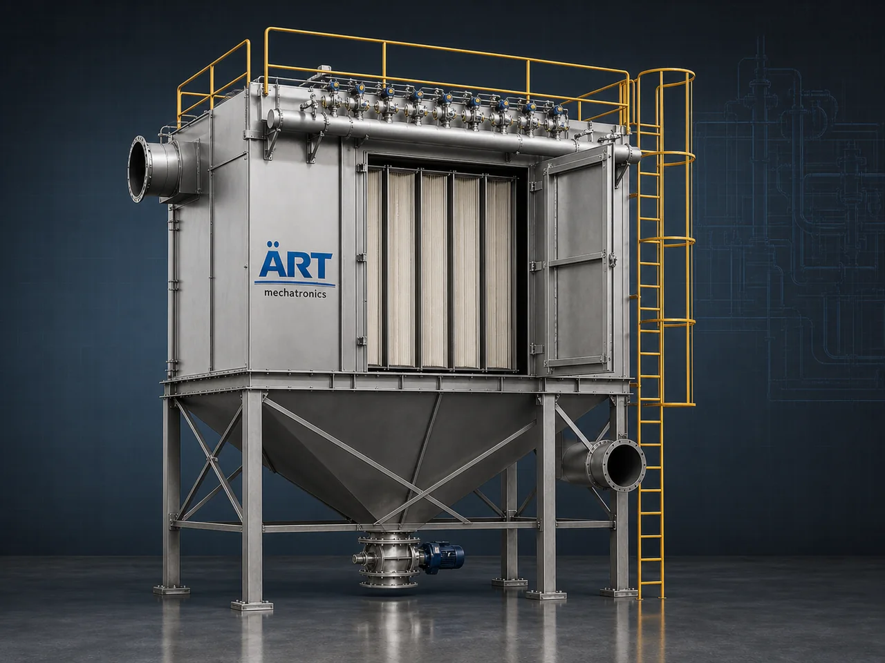

Flat Bag Dust Collector Machine (Flat Bag Filter Dust Collection System for Compact & Efficient Filtration)
A Flat Bag Dust Collector Machine, also known as a Flat Bag Filter or Panel Bag Dust Collector, is an advanced industrial air pollution control system designed to remove dust and particulate matter using flat-shaped filter bags or panels.

About the Flat Bag Dust Collector Machine
Unlike conventional cylindrical filter bags, flat bag filters provide higher filtration area within a compact space, making them ideal for applications where space optimization and efficient dust control are required.
Flat bag dust collectors are widely used in industries such as food processing, pharmaceuticals, powder handling, chemicals, packaging, cement, and light industrial applications, where efficient dust filtration with compact installation is critical.
ART Mechatronics offers high-performance flat bag dust collectors, engineered for efficient dust removal, optimized space utilization, and reliable industrial operation.
One machine, many names
Buyers search for this equipment under many terms — we manufacture all of them:
Working Principle of Flat Bag Dust Collector
Dust-filled air enters the system through:
Air passes through flat filter bags or panels:
Flat design = higher surface area in compact space
Dust is removed using:
Collected dust falls into:
Filtered air is released safely into environment.
Types of Flat Bag Dust Collectors
Flat Bag Filter Vs Round Bag Filter
Feature Flat Bag Filter Round Bag Filter Space Requirement Compact Larger Surface Area Higher Standard Efficiency High High Maintenance Easy Moderate Application Compact systems Large plants
Flat bags = space-efficient alternative
Industries Using Flat Bag Dust Collectors
🍃 Food & Agro Industry
- Spices
- Flour mills
- Grain processing
💊 Pharma & Healthcare
- Powder handling
- Tablet manufacturing
⚗️ Chemical Industry
- Fine powder processing
🏗️ Construction & Cement
- Small to mid-scale units
⚙️ Packaging & Material Handling
- Filling lines
- Conveying systems
♻️ Plastic & Recycling
- Granules and powders
Features & Advantages
- Compact and space-saving design
- Higher filtration area in limited space
- High dust collection efficiency
- Low maintenance requirement
- Flexible cleaning options (pulse / mechanical)
- Energy-efficient operation
- Suitable for fine and medium dust
Technical Highlights
- Airflow Capacity: Custom designed
- Filter Type: Flat Fabric Bags
- Cleaning Mechanism: Pulse Jet / Mechanical
- Dust Discharge: Hopper / Collection Bin
- Construction: Mild Steel / Stainless Steel
- Automation: PLC-based control (optional)
Turnkey Flat Bag Dust Collection Solutions
ART Mechatronics offers:
- Complete system design & engineering
- Ducting layout optimization
- Equipment manufacturing
- Installation & commissioning
- Automation integration
- After-sales service & AMC
Why Choose Art Mechatronics
- Expertise in compact dust filtration systems
- Customized solutions for space-constrained plants
- High-efficiency and durable designs
- Low maintenance and operational cost
- Proven performance across industries
Applications
- Food Processing Units
- Pharma Plants
- Chemical Processing Units
- Packaging Plants
- Industrial Manufacturing Units
Get pricing & specs for the Flat Bag Dust Collector Machine
Share the product, target capacity, current process and plant location. These details help our engineers discuss the right machine or line configuration.
One partner, from design to start-up
ART Mechatronics designs, manufactures, installs and commissions your Flat Bag Dust Collector Machine solution with regional presence in India, UAE and Thailand.